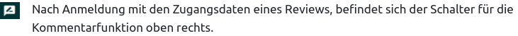

Studiendurchführung
Vorbereitung
Wichtige Informationen sind auch im Kapitel: Vorbetrachtungen zu finden.
- Zugangsdaten festlegen, Art der Anmeldung und zeitliche Gültigkeit in der XML zur Studien-Definition festlegen
- Festlegung der Aufgaben-Bezeichner und der Player zur Wiedergabe in der XML zur Aufgaben-Definition (Gute Kurznamen für Aufgaben wählen, sprechende Titel)
- Testablauf planen mittels XML zur Testheft-Definition: Welche Aufgaben, welche Zwischenseiten, welche Blöcke mit welchen Beschränkungen?
Testcenter konfigurieren
System-Check
Soll zur Prüfung der örtlichen Gegebenheiten ein System-Check durchgeführt werden, ist dieser im Testcenter einzurichten. Mehr dazu ist im Kapitel: System-Check zu finden.
Arbeitsbereich anlegen
Es muss ein Bereich für die Testdateien der Studie angelegt werden. Dieser sollte einen eindeutigen Namen mit Bezug zur Studie haben. Sobald Testpersonen die Studie gestartet haben, fallen Daten an. Diese Daten können im Arbeitsbereich heruntergeladen werden.
Aufgaben und Testhefte laden
Im nächsten Schritt werden die XML zur Testheft-Definition und die XML’s zur Aufgaben-Definition inkl. aller benötigten Ressourcen (Aufgaben-VOUD, Aufgaben-VOCS, GeoGebra-ITCR und Player-HTML) in den zuvor eingerichteten Arbeitsbereich des Testcenters geladen. Mehr dazu ist im Kapitel: Daten und Prozesse zu finden.
XML zur Studie-Definition laden
Studie im Review und Probelauf:
Um sicherzustellen, dass die Studie ohne Probleme läuft und um vorab die Aufgabeninhalte zu betrachten, kann es sinnvoll sein die Studie erst einmal in einer Vorschau zu betrachten. Hierfür wird für bestimmte Zugänge der Testmodus: run-review festgelegt. Die entsprechenden Zugänge können dann den Studienverlauf testen und Aufgaben betrachten. Es können auch Kommentare zu den Aufgaben oder zum gesamten Testheft abgegeben werden. Basierend auf diesen Kommentaren können die Aufgaben im Studio angepasst werden. Anschließend kann die geänderte Aufgabe aus dem Studio exportiert werden und die so angepasste Aufgaben-VOUD kann wieder in das Testcenter hochgeladen werden. Sollen Änderungen in der Testheftstruktur oder im Verhalten der Studie erfolgen, kann die XML zur Testheft-Definition angepasst werden und erneut in das Testcenter geladen werden.

- Testmodus für finale Testung in der XML zur Studien-Definition festlegen (
run-hot-returnoderrun-hot-restart) - Zugangsdaten für die Testpersonen in der XML zur Studien-Definition festlegen und falls nötig zeitliche Limits festlegen, ggf. Zeitfenster gut dokumentieren
- XML zur Studiendefinition in den Arbeitsbereich laden
- Einen Probelauf der finalen Version starten und schauen, ob sich alles wie geplant verhält. Es sollte auch geprüft werden, ob entsprechende Daten im Arbeitsbereich erzeugt werden. Wenn alles soweit in Ordnung ist, sollten die erzeugten Daten im Arbeitsbereich gelöscht werden, bevor die finale Studiendurchführung startet. Sonst sind später die Daten des Probelaufs im Datensatz der Studie enthalten.
Studienlauf
Nun können sich die Testpersonen mit den in der XML zur Studien-Definition festgelegten Zugangsdaten am Testcenter anmelden. Die Anmeldung der Testpersonen erfolgt nach Eingabe der Zugangsdaten mit dem Schalter: Weiter. Nach der Anmeldung ist ein sehr reduziertes Startbild zu sehen. Rechts ein paar allgemeine Informationen (Version, Datenschutz etc.), links nur Eingabefelder für Name und Kennwort. Nach der Eingabe wird ein großer Schalter präsentiert, der das Testheft symbolisiert, das gestartet werden soll. Die Anzeige des Testheftes signalisiert auch eine erfolgreiche Anmeldung. Mit Klick auf die Schaltfläche des Testheftes werden alle Testinhalte geladen. Sobald möglich wird auch die erste Seite schon gezeigt und das Laden wird im Hintergrund fortgesetzt.
Die Aufgabennavigation erfolgt rechts oben. Sollte eine Aufgabe aus mehreren Seiten bestehen, dann kann man rechts unten mit entsprechenden Schaltern blättern. Manchmal ist die Bearbeitungszeit begrenzt, dann werden rechtzeitig (5 min und 1 min vor Ende) Hinweise eingeblendet.
Wenn zuvor eingeplant, können die Studienverantwortlichen die Studie auch mittels Gruppenmonitor steuern. Mehr dazu ist dem gleichnamigen Kapitel zu entnehmen.
Während des Studienlaufs fallen permanent Daten an. Diese werden in einem Datensatz im Arbeitsbereich gespeichert. Der Datensatz enthält die gegebenen Antworten und Logs. Dieser Datensatz ermöglicht nach Abschluss der Studie eine Auswertung und ist daher sehr wichtig. Es empfiehlt sich daher in regelmäßigen Abständen diese Daten herunterzuladen und zu sichten. So können schon während des Studienlaufs eventuell bestehende Probleme frühzeitig erkannt werden und nicht erst am Ende der Studie.
Test oder Befragung beenden
Die Beantwortung kann jederzeit beendet werden. Die Antworten werden stets sofort gespeichert und es ist hierfür kein Kommando erforderlich. Je nachdem wie der Test zuvor konfiguriert wurde, kann über ein zusätzliches Aufgabenmenü rechts oben neben der Aufgabennavigation der Test beendet werden. Ist dieses Menu nicht eingeschaltet, kann der Test durch einen Klick auf das IQB-Logo oben links beendet werden. Anschließend gelangt man wieder zur Ansicht der Testhefte. Bei der Beendung einer Testung kann es je nach Konfiguration des Tests zu Warnungen kommen, wenn ein Test beendet werden soll. Welche Warnungen können je nach Konfiguration angezeigt werden:
Verlassen eines zeitbeschränkten Blocks:
Soll der Test beendet werden und befindet sich die Testperson zu diesem Zeitpunkt in einem zeitbeschränkten Block, wird eine Warnung angezeigt, dass nach Verlassen des Blocks nicht mehr in diesen zurückgekehrt werden kann. Wird diese Warnung bestätigt, wird der Block gesperrt. Haben Testpersonen den Block noch nicht vollständig bearbeitet, ist es nicht mehr möglich die Bearbeitung fortzusetzen.
Existieren zeitbeschränkte Blöcke in einem Testheft, können diese gesperrt werden, wenn der Test beendet wird. Eventuell haben Testpersonen noch nicht alle Aufgaben eines Blocks bearbeitet und können nach Test beenden nicht mehr auf den Block zugreifen.
Verlassen bei aktiven Navigationsbeschränkungen:
Je nach Konfiguration können Aufgaben nur verlassen werden, wenn Pflichtelemente bearbeitet oder alle Bestandteile einer Aufgabe gesehen oder angehört wurden (presentation/ response complete). Befinden sich Personen zum Zeitpunkt der Beendung in einer solchen Aufgabe und sind die genannten Bedingungen noch nicht erfüllt, kann eine Warnung angezeigt werden. Es sollten dann erst die Bedingungen zum Verlassen der Aufgabe erfüllt werden, bevor der Test beendet werden kann.
Test fortsetzen
Je nach Konfiguration kann das Testheft nach Beendigung des Tests fortgesetzt werden. Auf der Seite der Testheftübersicht ist dann unterhalb des entsprechenden Testheftes der Text: Fortsetzen zu sehen. Nach einem Klick auf das Testheft, setzt der Test an der Stelle fort an dem er beendet wurde. Die zuvor gegebenen Antworten sind vollständig erhalten und einsehbar. Ist das Testheft deaktiviert, ist in der Testheft-Konfiguration eine Sperrung bei Beendigung des Tests vorgesehen.
Falls ein Gruppenmonitor zur Steuerung eingesetzt wird, kann auch mittels dieses Monitors der Test beendet oder fortgesetzt werden. Mehr dazu ist in dem Kapitel System-Check zu entnehmen.
Auswertung, Evaluation
Daten wie vorgesehen auswerten, Berichte schreiben, Rückmeldung an Schulen geben. Evaluieren: Dabei hilft die Vorstellung, dass man die gleiche Studie nächste Woche nochmal durchführen soll.
Mögliche Probleme
Nach erfolgreicher Anmeldung ist kein Startbild mit den Testheften zu sehen
Eventuell besteht keine Internetverbindung. Es sollten entsprechende Routinen zur Fehlerbehebung beginnen (lose Kabel etc.).
Es wird für die Anmeldung kein Testheft gefunden
Zugangsdaten prüfen. In der XML zur Studien-Definition prüfen, ob dem Zugang ein entsprechendes Testheft zugewiesen ist und ob dieses Testheft im Arbeitsreich existiert.
Schalter Testheft ist inaktiv
Dies kann daraufhin deuten, dass das Testheft gesperrt ist. Je nach Konfiguration in der XML zur Testheft-Definition kann es sein, dass die Testhefte nach Beendigung der Testung gesperrt werden. Ein Testheft kann eventuell auch über einen eingesetzen Gruppenmonitor von der Testleitung gesperrt wurden sein. In diesem Fall kann die Sperrung mit dem Gruppenmonitor auch wieder aufgehoben werden.
Aufgabeninhalte werden nicht präsentiert
Werden die Inhalte erst während der Durchführung geladen (Konfiguration zum Ladenverhalten sind in der XML zur Testheft-Definition festzulegen. Hier gibt es zwei Arten: LAZY und EAGER) kann es ein, dass Inhalte (Videos, Audios) noch geladen werden und die Testperson nicht sofort etwas sieht. Eventuell kann hier auch das Neuladen einer Seite hilfreich sein. Falls ein Gruppenmonitor zum Einsatz kommt, könnte dieser verwendet werden, um die Testperson noch einmal an den Anfang eines Block zu leiten und somit das Neuladen einer Aufgabe zu erzwingen.
Sollten technische Probleme mit dem Computer auftreten (z. B. Audio-Buchse defekt), dann kann jederzeit der Browser geschlossen und der Test auf einem anderen Computer neu gestartet werden. Die schon gegebenen Antworten werden geladen und der Test kann fortgesetzt werden.